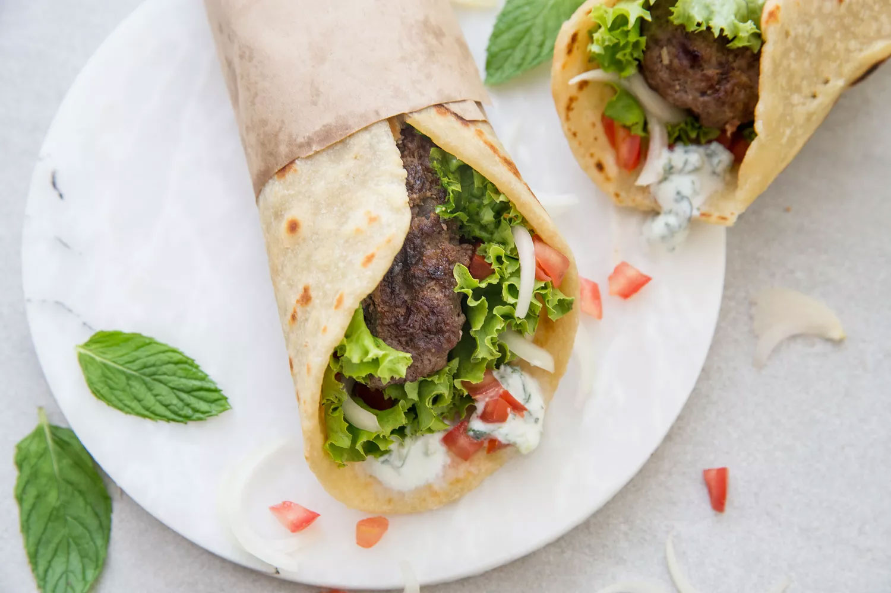

Easy Homemade Gyro

image and recipe grabbed from www.thespruceeats.com
Description
The gyro (YEE-row) is a classic Greek dish, with the meat traditionally cooked on a vertical spit and shaved off in individual servings. While this delicious method for preparing meat is often used in Greek restaurants, it's not easy to accomplish at home. This Greek-American take on the dish uses ground lamb or beef and is quick and easy to make in a home kitchen.
Ingredients
For the Meat Mixture:
- 1 pound ground lamb, or beef
- 2 teaspoons kosher salt
- 1 teaspoon freshly ground black pepper
- 1 1/2 teaspoons ground cumin
- 1/4 teaspoon ground nutmeg
- 1 teaspoon dried oregano
- 2 cloves garlic, minced
- 1/4 cup minced red onion
- 2 teaspoons freshly squeezed lemon juice
- Oil, for grilling or frying, as needed
For the Sandwich:
- 4 rounds flatbread, or pita
- 4 leaves lettuce
- 1 medium tomato, sliced or diced
- 1/2 medium onion, thinly sliced
- 1/4 cup Tzatziki sauce
Steps
- Gather the ingredients.
- To make the meat mixture, thoroughly combine the ground lamb, salt, black pepper, cumin, nutmeg, oregano, garlic, red onion, and lemon juice in a mixing bowl.
- Divide into four equal portions and shape into oblong patties about 3-inch wide by 6-inch long by 1/2-inch thick. Notice that the patty is shaped more like a sausage (long and thin) rather than a hamburger patty. This is intentional, to ensure the patty fits in the flatbread. Refrigerate for one hour.
- Preheat a grill or grill pan over high heat. Alternatively, heat a large nonstick skillet over high heat.
- If grilling, brush the grill or grill pan with oil. If pan-frying, add a dollop of oil to the pan. Grill or pan-fry the patties for 3 to 4 minutes per side, or until cooked through with crispy edges.
- To assemble the sandwiches, spread tzatziki sauce down in the center of a flatbread round or the pocket of the pita.
- Add a lettuce leaf, some sliced tomato, and a few thin onion slices.
- Add the patty and fold the bread over the lamb. Repeat with the remaining sandwiches. Serve and enjoy.
Back to home